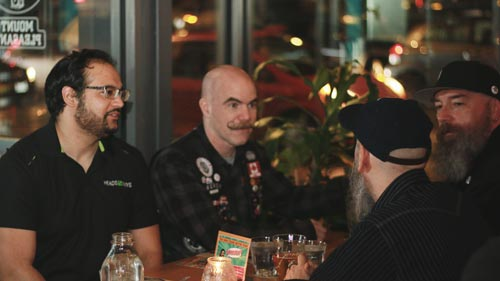
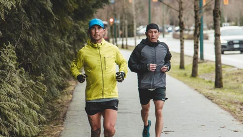
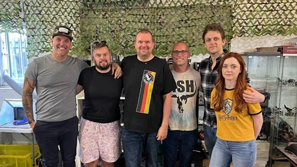
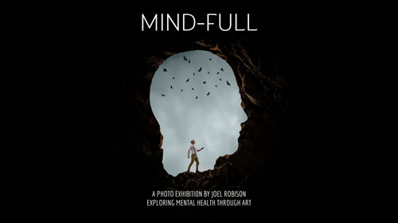
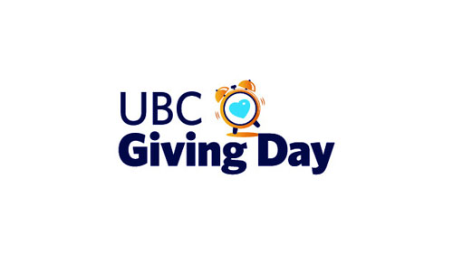
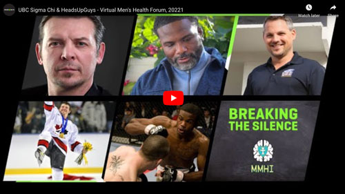
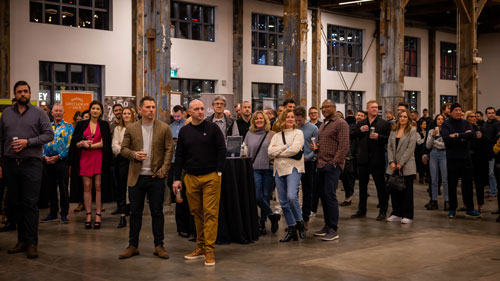

We are deeply grateful for the amazing support from our ThriveWell community. It is inspiring to witness people harnessing their interests and passions in innovative ways to bolster our efforts in improving men’s mental health and preventing suicide.
Mental health issues, like anxiety, depression, and suicide in men, can be difficult to talk about, but this is why raising awareness of these issues is so important.
Here are seven steps to hold a successful and impactful fundraiser you can be proud of!
- Brainstorm Ideas
- Define Your Goals
- Create A Game Plan
- Engage Supporters
- Enjoy The Event
- Donate Funds
- Follow-Up
Examples of previous fundraising events.
1. BRAINSTORM FUNDRAISING IDEAS
We welcome a variety of fundraising ideas that align with our mission and values. Many of the following ideas are flexible enough to be carried out in person, virtually, or a combination of both.
Organize a walk, run, bike ride, trivia night, motorcycle ride, or any activity you enjoy.

ThriveWell Trivia Night
Try a multiday, weekly, or monthly fitness or stair challenge, promoting via social media to drum up donations as you go.

Joel and Nick – David Goggins 4x4x48 Challenge
Turn hobbies like cooking, gaming, or motorcycling into fundraising marathons.

Host auctions where local artists contribute pieces with proceeds supporting our cause.

Organize one or two-day tournaments, featuring sports like softball, golf, or hockey. Teams donate to enter.
Hole 72 Fundraiser
Engage your workplace in themed campaigns, like for Men’s Mental Health Week in June. Inspire colleagues to raise funds and awareness. Check for donation-matching from your employer.

2x Featured program for UBC Giving Day, Staff and community fundraiser
Host engaging virtual events or panel discussions on men’s mental health. Connect participants from all over to foster meaningful conversations.

Breaking the Silence Around Men’s Mental Health, UBC Sigma Chi Virtual Speakers Panel and Fundraiser
Host gala dinners or virtual events with guest speakers, live entertainment, prize draws, and auctions.

Feel free to mix and match the suggestions above, or explore your own creative fundraising concepts. At the bottom of this page are additional ideas from past successful fundraisers for inspiration.
Expanding your team by involving other friends and family members in organizing the event can greatly enhance its impact. It also allows you to tap into a wider audience through their networks.
2. DEFINE YOUR GOALS AND CHOOSE A FUNDRAISING METHOD
Once you’ve decided on what fundraising idea works best for you, it’s time to set your goals and plan how to collect funds.
Think about and set a realistic total donations goal:
- We understand raising funds is hard work, so set your goals realistically and remember that any support, big or small, is greatly appreciated!
Decide how you will collect funds. Options include:
- Collecting cash donations
- Utilizing a crowdfunding platform such as GoFundMe (free-to-use with donors having the choice to tip the platform if they wish).
Directing donors to make donation via credit card through our online donation page.
3. CREATE A GAME PLAN AND LET US KNOW
Take the time to carefully plan the details and logistics of your event, including venue selection, scheduling, and any necessary resources. Develop a budget to ensure you stay on track financially.
Engage with your community and encourage participation to boost the impact of your fundraiser.
When possible, involving more people leads to a better event outcome in terms of impact, connections, awareness and fundraising.
Let Us Know About Your Fundraiser
- Once your event is underway, keep us in the loop! We’re excited to feature it on our social media and share photos.
4. ENGAGE SUPPORTERS AND BOOST PROMOTION
Utilize word-of-mouth, email, social media, personal outreach, or engage with news outlets to promote your event, share your reasons for supporting us, and raise awareness about men’s mental health.
Mobilize volunteers, seek sponsorships or discounts for required resources, or gather raffle prizes to increase community involvement.
5. ENJOY THE EVENT
During the event, remember to gather pledges, secure sponsorships, and collect entry fees as needed.
Amidst all your organizing, don’t forget to pause and savor the event you have worked hard to create.
6. DONATE COLLECTED FUNDS
Transfer the collected donations to ThriveWell via either cheque or online donation. Share the total amount raised with your supporters and ensure transparency by including a photo or screenshot of the cheque/donation.
Regardless of the method chosen, please ensure transparency with your supporters by sharing a photo or screenshot of the matching cheque/donation made to ThriveWell.
7. FOLLOW-UP WITH PARTICIPANTS
Following-up after the event cultivates stronger connections and fosters a sense of community and sustained support.
- Take the initiative to personally thank attendees and donors and extend an invitation for future engagement.
- Encourage feedback and suggestions to gather valuable insight on their experience for future fundraising events.
PREVIOUS FUNDRAISING EVENTS

Explore some of the inspiring initiatives our supporters have orchestrated to raise awareness about men’s mental health and champion our cause:
If you have any questions about or need assistance with fundraising, don’t hesitate to contact us at info@thrivewell.org.
We’re here to support your efforts in any way we can.